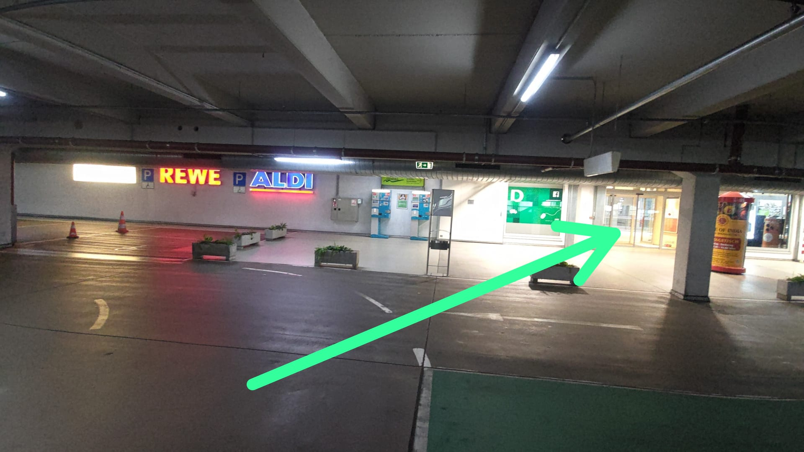
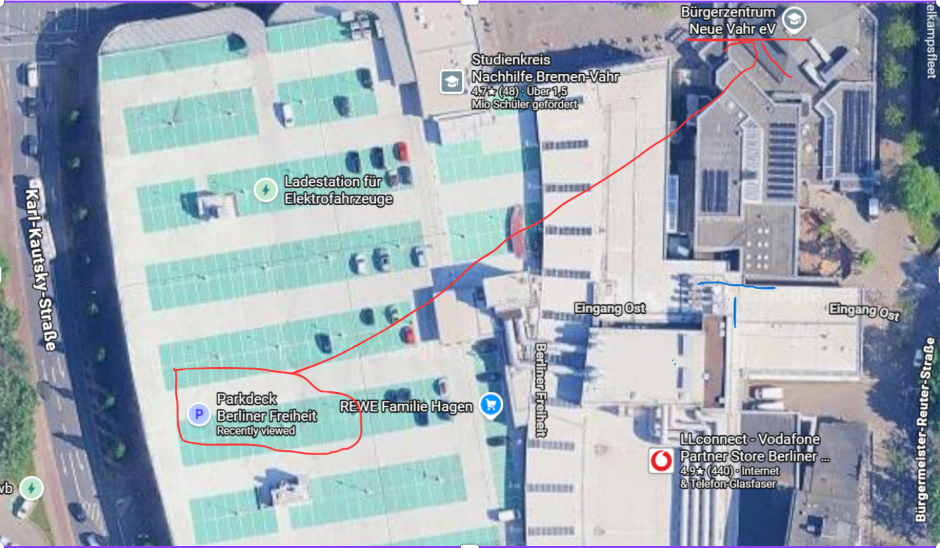
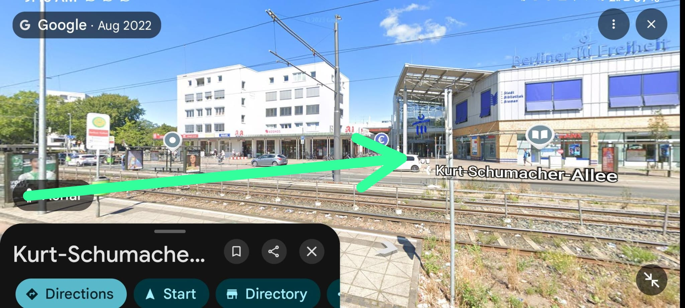

18. Oktober 2026October 18, 2026
Wenn Sie andere Heilige angemeldet haben, die diese E-Mail nicht direkt erhalten haben, leiten Sie diese Information bitte an sie weiter, damit alle angemeldeten Heiligen informiert sind.If you have registered other saints who did not receive this email directly, please forward this information to them so that all registered saints are informed.



Heilige, die am Samstag, 17. Oktober anreisen und teilnehmen möchten, können sich an Bruder Ethaniel wenden: +49 162 2472282.Saints who will arrive on Saturday, October 17, and would like to participate may contact Brother Ethaniel at +49 162 2472282.
Die Blending Time findet von 14:00 bis 17:00 Uhr statt.The blending time will take place from 2:00 PM to 5:00 PM.
Bitte teilen Sie uns umgehend mit, wenn Sie Ihre Anmeldung absagen müssen. Das hilft uns, die Anzahl der Lunchpakete besser zu planen und unnötige Reste zu vermeiden.Please inform us immediately if you need to cancel your registration. This will help us better plan the number of lunch packages and avoid unnecessary leftovers.
Wir ermutigen alle geretteten und getauften Jugendlichen, mit ihren Eltern an der Versammlung teilzunehmen.We encourage all saved and baptized young people to attend the meeting with their parents.
Wasser und Lunchpakete werden für alle Teilnehmer bereitgestellt.Water and lunch packages will be provided for all participants.
Eine Übersetzung ins Englische, Chinesische und Russische ist über Zoom verfügbar. Bitte bringen Sie Ihr eigenes Smartphone und Kopfhörer mit.Translation into English, Chinese, and Russian will be available via Zoom. Please bring your own smartphone and headphones.
Es gibt einen direkten Zugang durch das Einkaufszentrum von der ersten Etage aus (siehe Bilder in der E-Mail).There is direct access through the shopping center from the first floor (see pictures in the email).
Wir brauchen vor allem noch Hilfe beim Einweisen (Ushering).We mainly still need assistance with ushering.
Wer helfen möchte, kann sich mit folgendem Formular anmelden:Those who would like to help can register using the following form:
https://docs.google.com/forms/d/1LtnLV0-RbxzUwsfVkYv6YM7HftEZrLLjBpjU3vz9N58/preview